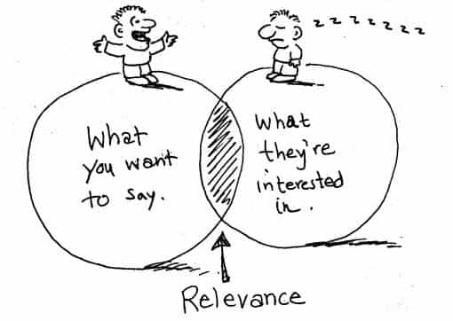
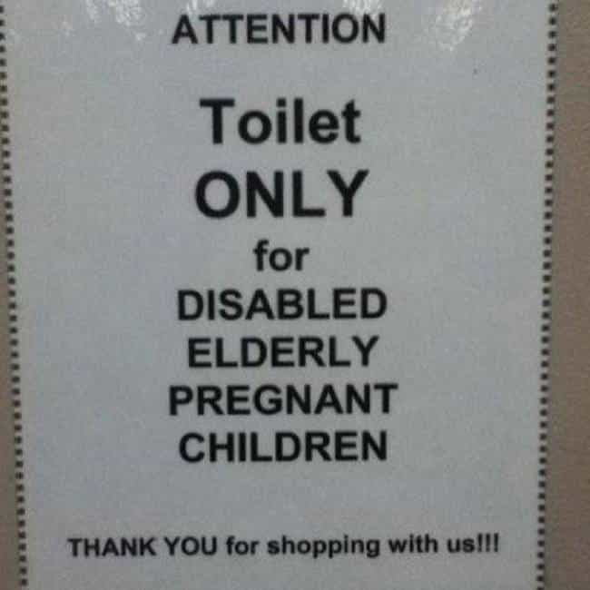

Luke Stranahan is an engineer by trade and an armed patriot by inclination. He writes for Return of Kings as a leisure pursuit and an attempt to do his part to help reverse the slide into moral decrepitude of modern society. Follow him on Twitter.


In this increasingly electronic and remote society we have, much of our communication is done online. Everything from texts to emails to the words right here are written on a keyboard and sent through Ted Steven’s “series of tubes” to the recipient, and, while it makes us arguably more narcissistic and less endowed with social skills, it behooves one to express himself online, so, today, we’ll talk about 10 ways to write well online.
It’s a serious dick move to call someone on their spelling in order to win your argument, but when someone on the left (which is who we here usually face, either culturally or politically) gets desperate, they are going to reach for anything they can to tear you down, especially if it’s relevant to the topic at hand.
One of my favorites is “Marshall Law.” Although Chief Justice John Marshall was extremely influential in the Supreme Court’s development, and a great American to boot, the term that people usually mean is “martial law,” which is when a standing military is placed in control of law and order as temporary police and judicial systems. This typically happens in times of disaster and invasion.

This includes using the wrong word; unless the property owner really meant to whore out anyone he caught.
The solution to this one is to look up words you do not typically use and make sure you are using them correctly. No one looks more ignorant than someone operating outside of their skill level, and that counts for writing as well. What is insidious here is that the spell checker, if you misspell into a correctly spelled, but inappropriate, word, will not say anything. Watch your homonyms (there, they’re, their; to, too; who’s, whose; your, you’re; etc.)
You’re not going to get gigged on grammar as much as you are on your spelling. It’s a human phenomenon I have noticed from everything to gaming, to industry, to writing, that the person of average skill will talk down to the neophyte, but the person of superlative skill will remain professional and polite. What I mean by this is that the average English speaker has mediocre written grammar, so he or she, while they might want to, cannot correct people on grammar due to lack of their own skill, but will be skilled enough to correct people on spelling alone.
However, despite the fact that you will not be as likely to be criticized, your errors will be noticed by some, so it helps to know grammar and punctuation. I write some damn long sentences in these articles, but even though I try to maintain proper use of commas, conjunctions, and semicolons, I am sure that I have married some subordinate clauses together in a way that would not be received well in Heaven.
It’s outside the scope of this article to provide grammar lessons, but a decent English textbook and good style manual will go a long way. The latter of those two is a work explaining how people writing for an institution (like the Associated Press) should write, and it would cover topics such as how to refer to the publication itself (Return Of Kings, Return Of Kings, ROK, RoK, R of K, etc.)
Return Of Kings (and that’s how I write it from the above discussion) is a small staffed, low overhead business that reaches more people than we should be honestly expected to because of the self-reliance of the authors. Roosh’s philosophy is that you should write about what you know. My gig here is loosely defined as writing about masculine hobbies but, other than that, I can write about what I want, and I try to only write about things in which I have some expertise as do the rest of the staff.
Point being, Winston and Roosh bust their humps to get out multiple articles every day, so they have to edit for content, not spelling or grammar, which is why the occasional error will get through, even, most probably, in this article on the very subject.

This does not matter, as ROK (shortened version, as I referred to it earlier in full name, in italics) is an informal space where we (both writers and the readership) are more concerned about the content over the total correctness of the verbiage. Our writers can use all words of the English, and sometimes French, languages, including slurs and vulgarities, provided they are on topic and relevant, and no one gets upset, as we are all men here. We also write in a colloquial, modern tone, as if we were speaking in person.
However, you do not want to write that way in the workplace, or for professional publication. I’ve got a graduate thesis that is dry as a bone, but it is not meant for entertainment. As you enter more professional writing spheres, you should drop contractions, slang, superfluous modifiers, any controversial references, as well as anything unnecessary.
Read what you have written multiple times before sending it off. Check for things like repeated words; the paragraph two above this one began with “however,” but I decided I wanted the next paragraph to begin with that word, as I was introducing a contradicting point, and it was removed so I would not begin two paragraphs in a row with the same word.
Check for misspellings, including the ones that the spellchecker did not find, and grammatical errors. Also check for simply using the wrong word in the sentence than the one you meant. Lastly, check to make sure you are not using a “big word” more than once, or, at the most, twice, in your article.

While you are proofreading, check for unnecessary fluff. The word count limit here at ROK does me well, as I have to trim some of excess (I’d use superfluous here, but I used it once already in this article) garnishment to get down to a sane length before I destroy attention spans with my verbosity.
Some of my very first articles had better content than my more recent ones, as I spent more time on them before I went weekly in my contributions. They were bigger articles that were aggressively pruned down to two thousand words, as opposed to some that get finished at under the limit and are not edited for length.
I rarely write an article in one sitting. I tend to write better when I am enthusiastic about something, and, when the passion wanes, I will stop and head off to other activities before returning, later, to finish. Still later, I will upload it to the site, then go find relevant and entertaining pictures off Google to finish it, and review it once more how it will look on its webpage before submitting it.
A business analog to this is to never send an email while angry. Always write it (don’t put in the address, as some programs like to send drafts for you, in case you “forgot”) and come back later to review it. You may find that you don’t want to say everything you had written previously, and you now have an opportunity to revise what you will say that you would not have had if you had sent it earlier.
That being said, on this Saturday morning as I write this, I will now go off to do other tasks, and get back to the last four points later.
Everyone likes to go on a tirade occasionally; they feel good, and maybe entertain some people. But, these rants typically do not have much lasting value, and the writer often wishes he’d made better points.
Even more importantly, someone who is an expert will inevitably come along and trip you up on your facts and reasoning if you did not do your homework and figured everything out first. An English Composition college professor could, no doubt, rip me up on the occasional error on this article, but I know I write fairly decently, so hopefully he’d be forgiving and agree with the general gist of the piece.

The left does this, and it’s a large part of why they look so stupid.
Write what you know. If you don’t know it, learn it before you write it. Don’t base your writings on feelings alone, even strong feelings. Feel strongly about the facts if you want, but ground yourself in reasoning, not emotion.
The English language (and I know none other, so this may be true in other languages as well) has a delightful amount of words that are fun to use, but never seem to GET used by the general public. Granted, words that are out of style will mark you as odd, but there is a gray area in there that, if you pull a word from it, your target will be on lesser footing because you used a word that he didn’t know, but should.
Don’t call someone an illiterate idiot; call them something like an nonerudite troglodyte, or a catachrestic philistine, and, not only will you have insulted them, but it will take a while for them to figure it out. That’s just insults, though; if you paw through a good thesaurus, you will learn synonyms and antonyms that will help your writing be fresh and vivid.
Be careful, however, to not get too ornate with your writing for your purpose; remember, know your audience. Also, the English language is odd, no two words, even though they may be synonyms, mean exactly the same thing; they’re close, but not exact. Knowing this difference is, to quote a character in a favorite novel of mine, not the difference between lightning and the lightning bug, but the difference between the lightning bug and being STRUCK by lightning.
In this sphere of the internet, a good pop culture reference or wry commentary will help set the stage for the tone of your piece, although I will admit listening to the Series of Tubes video above made me realize how far the net has moved on in ten years, so maybe it’s a little dated.
Funny stories will also help make your point. I refer you to my colleagues Mr. Sharpe and Mr. Yader for what I consider to be the most hilarious articles on this site.
You want to cite other works for at least three reasons. Firstly, you are not going to have the space (and your readers will not have the time) to read everything you would want to say on the subject. This is why we pepper links through these articles so you can read more if you like (especially the big one saying “Read More” at the bottom of each piece).
Secondly, you want to borrow the thunder of previous works to help make your point. I’m not feeling particularly hilarious at the moment, but, since I pointed you at some good articles above, the point was made for me, and we could move on as I crash through 1850 words here on my way to 2000.
Lastly, as your stuff is fact based, and we’re not in a bubble chamber, you should link to the work of others to provide legitimacy. It’s exactly an evolved, informal way of listing your references, just like a more formal work would do theirs.
Writing is important in this digital age, and it follows that doing it well is also important. Know the language, know your audience and your subject, take a couple passes at writing it and a few more for proofreading and editing, adjust for the tone of the piece, and, finally, add in some references so your audience knows that what you’re saying is backed up by other people and not just hot air.
Read More: My 3 Greatest Mistakes Writing For Return Of Kings